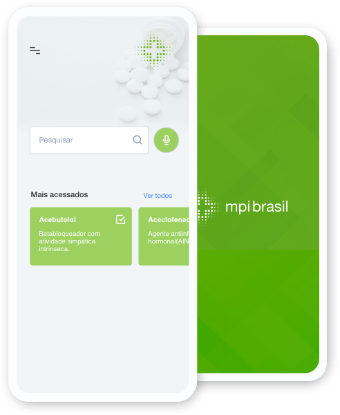

Sua busca rápida sobre medicamentos potencialmente inapropriados para idosos

O projeto MPI Brasil tem como foco central promover a prescrição segura de medicamentos para idosos e reduzir o uso de Medicamentos Potencialmente Inapropriados (MPI). A iniciativa surgiu após um estudo de 2009 revelar que 34,5% dos idosos avaliados utilizavam pelo menos um MPI.
Para combater essa realidade, duas grandes estratégias foram adotadas: a publicação do Consenso Brasileiro de Medicamentos Potencialmente Inapropriados para Idosos, em 2016, e a criação do aplicativo móvel MPI Brasil.
Atualmente, o projeto segue em expansão com o desenvolvimento de uma nova versão do aplicativo em parceria com o Instituto Socialtech e com alunos da Universidade Estadual do Sudoeste da Bahia (UESB).
Identificação de medicamentos potencialmente inapropriados
Suporte para médicos e farmacêuticos na prescrição
Redução da prescrição inadequada para idosos
+800 instalações em menos de um mês
O Brasil passa por um acelerado processo de envelhecimento populacional, com o percentual de idosos saltando de menos de 10% para 14,3% em um curto período. Esse cenário impulsiona o aumento da demanda por serviços de saúde e projeta um crescimento expressivo nos gastos do SUS.
Apesar de a medicação adequada ser essencial para a saúde, o uso de Medicamentos Potencialmente Inapropriados (MPI) — conceituados como aqueles em que os riscos superam os benefícios frente a alternativas mais seguras — representa um grave problema.
O aplicativo MPI Brasil é uma ferramenta de busca rápida desenvolvida para orientar profissionais de saúde na tomada de decisão sobre o uso seguro de medicamentos em idosos. Baseado no Consenso Brasileiro, ele oferece dados científicos sobre quais fármacos evitar, além de sugerir alternativas terapêuticas e orientações práticas para desprescrição e monitoramento.
Inovador e intuitivo, o app é multiplataforma e pode ser utilizado de forma offline, garantindo acesso rápido à informação em qualquer cenário, desde hospitais até regiões remotas sem internet.
Nosso objetivo principal é implementar uma estratégia para redução da prescrição de MPI e, consequentemente, a ocorrência de reações adversas a medicamentos (RAM) preveníveis, graves e potencialmente fatais em idosos.
Nosso público são os profissionais da área de saúde envolvidos na assistência ao paciente idoso e que necessitam de informações confiáveis sobre os Medicamentos Potencialmente Inapropriados para idosos, como por exemplo: médicos, enfermeiros, farmacêuticos, dentistas, além dos estudantes dessas áreas.
A segunda versão do aplicativo MPI Brasil foi desenvolvida pelo SocialTech, juntamente com a Universidade Federal da Bahia (UFBA), por meio do Instituto Multidisciplinar em Saúde-Campus Anísio Teixeira (IMS-CAT/UFBA) e pela Universidade Estadual do Sudoeste da Bahia (UESB), por meio do Curso de Medicina, Campus de Vitória da Conquista.
Para contribuir com a sustentabilidade do projeto, o aplicativo foi desenvolvido em código aberto, disponibilizado sob licenciamento público. Repositório: https://github.com/institutosocialtech/mpi-brasil
AL ODHAYANI, Abdulaziz et al. Potentially inappropriate medications prescribed for elderly patients through family physicians. Saudi Journal of Biological Sciences, v. 24, n. 1, p. 200–207, 2017.
AMORIM, Welma Wildes et al. Desenvolvimento de um aplicativo para suporte à prescrição de medicamentos apropriados para idosos. Geriatrics, Gerontology and Aging, v. 12, n. 2, p. 136–140, 2018.
BLACK, Cody D et al. Health system costs of potentially inappropriate prescribing in Ontario, Canada: A protocol for a population-based cohort study. BMJ Open, v. 8, n. 6, p. 1–8, 2018.
CENSUS BUREAU. Current Population.
COUNTER, David; MILLAR, James W.T.; MCLAY, James S. Hospital readmissions, mortality and potentially inappropriate prescribing: a retrospective study of older adults discharged from hospital. British Journal of Clinical Pharmacology, v. 84, n. 8, p. 1757–1763, 2018.
DO NASCIMENTO, Mariana Martins Gonzaga et al. Potentially inappropriate medications: predictor for mortality in a cohort of community-dwelling older adults. European Journal of Clinical Pharmacology, v. 73, n. 5, p. 615–621, 2017.
HARRISON, S. L. et al. Costs of potentially inappropriate medication use in residential aged care facilities. BMC Geriatrics, v. 18, n. 9, 2018.
INSTITUTO BRASILEIRO DE GEOGRAFIA E ESTATÍSTICA (IBGE). Síntese de indicadores sociais : uma análise das condições de vida da população brasileira : 2016. Rio de Janeiro: [s.n.], 2016. v. 36.
LOYOLA FILHO, Antônio I. De et al. Estudo de base populacional sobre o consumo de medicamentos entre idosos: Projeto Bambuí. Cadernos de Saúde Pública, v. 21, n. 2, p. 545–553, 2005.
MORGAN, S. G. et al. Frequency and cost of potentially inappropriate prescribing for older adults: a cross-sectional study. CMAJ Open, v. 4, n. 2, p. E346–E351, 2016.
MUHLACK, Dana Clarissa et al. The associations of geriatric syndromes and other patient characteristics with the current and future use of potentially inappropriate medications in a large cohort study. European Journal of Clinical Pharmacology, v. 74, n. 12, p. 1633–1644, 2018.
OLIVEIRA, M.G. et al. Factors associated with potentially inappropriate medication use by the elderly in the Brazilian primary care setting. International Journal of Clinical Pharmacy, v. 34, n. 4, 2012.
OLIVEIRA, Márcio Galvão et al. Consenso brasileiro de medicamentos potencialmente inapropriados para idosos. Geriatrics, Gerontology and Aging, v. 10, n. 4, p. 1–14, 2016.
SENADO FEDERAL. Envelhecimento faz gastos explodirem. Em Discussão! Revista de audiências públicas do Senado Federal, Ano 5, p. 25–26, 2014.
O Instituto de Gestão de Projetos Sociais - SocialTech é uma associação civil de direito privado, sem fins lucrativos e sem cunho político partidário. Fundado em 22 de dezembro de 2015 por um grupo de profissionais com competências multidisciplinares em gestão de projetos nacionais e internacionais. O Instituto visa contribuir com o desenvolvimento de práticas sociais sustentáveis, nas áreas de Educação, Saúde e Tecnologia para gerar autonomia e bem estar integral.